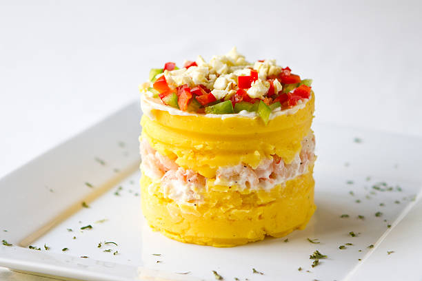

Causa Peruana

Description:
A popular Peruvian starter dish that is served cold. It is made with chicken, layered potatoes, limes; topped olives, peppers, and egg. Perfect to eat on hot summer days! Here's what you need.
Ingredients
- 4 cups yellow potatoes
- 4 cups water
- 1 teaspoon salt
- 2 cups chicken
- 3/4 cups mayonaise
- 2 tablespoons black olives
- 1 egg
- 1/2 cup red onion
- 3 yellow peppers (aji amarillo)
- 1/4 cup olive oil
- 1/2 avocado
- 2 limes
Steps
- Wash the potatoes with plenty of water and peel with a vegetable peeler. Cut them into four or six parts according to their size. You should get pieces of (at most) 5 cm.
- Place them in a large saucepan with 4 cups of water and a teaspoon of salt. Cook half covered for at least 15 minutes until potatoes are soft. The way to test them is to prick them with a fork. If your fork meets little resistance, they are soft enough to puree.
- Strain the potatoes, let them drain for a few minutes.
- The best Causa Limeña meat is chicken breast. A small chicken breast gives around 300 grams of shredded chicken. Roast or boil the chicken according to your taste. Remember to add a pinch of salt and a little pepper for cooking.
- Peel the onion and chop finely.
- Boil the egg in plenty of water, and remove the shell. Cut it into thin slices.
- While the potatoes are still warm, place them in a large bowl, and with a potato masher, mash them until there are no lumps left.
- Wash the chili peppers and place them on a cutting board. Remove the stem with a sharp knife, cut crosswise and remove all the veins and seeds. Cut the chili peppers into large pieces. Don’t worry about size because they will liquefy later.
- Put the oil and peppers into the blender glass. Beat for about three minutes. The mixture will not be completely homogeneous.
- Pour the chili sauce over the mashed potatoes with a pinch of salt and mash again for a few minutes until the chili is fully blended into potatoes. Taste and if necessary, rectify with salt.
- In a mixing bowl place the shredded chicken. Make sure that all the chicken is finely chopped. Add mayonnaise, chopped onion, and lime juice. Stir until all ingredients are well mixed.
- Remove the seed from the avocado, peel the skin away and cut the soft flesh into thin slices. Sprinkle a few drops of lime over the avocado slices to prevent it from turning brown.
- For the next step, the assembly of the causa rellena, use an empty can with the base and lid removed (using a can opener). If you wish, you can use a round mold or a square mold or even a glass container.
- Place the can on a flat plate and add two tablespoons of mashed potatoes. With a spoon or any other utensil that you consider convenient, press the mashed potatoes towards the bottom of the plate and flatten.
- Add a layer of avocado pieces.
- Then add three tablespoons of chicken with mayonnaise. Press down gently.
- Cover with a second layer of mashed potatoes and flatten once more. Very carefully remove the can by pulling it upwards. Repeat this procedure until you run out of ingredients. We make 6 Causas Limeñas with the ingredients listed above.
- On top of each Causa Limeña place an egg slice, a few black olives and some thin slices of yellow chili.
- Serve individually as a starter for dinner or a cold appetizer for lunch.
Home